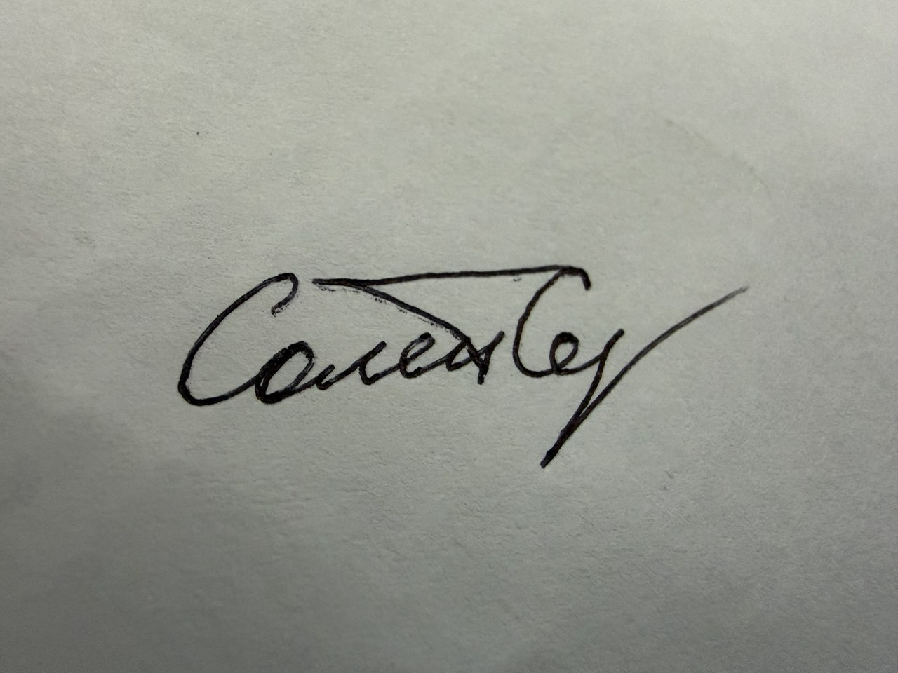

Соломаха Сергей Сергеевич
гинеколог-хирург, онколог • санкт-петербург • smart • safe • soft
Выбор хирурга — сложная задача.
Моя задача — ваше спокойствие, уверенность, эстетика и качество жизни.
Определенность в деталях.
Ваш хирург. Ваш результат.
